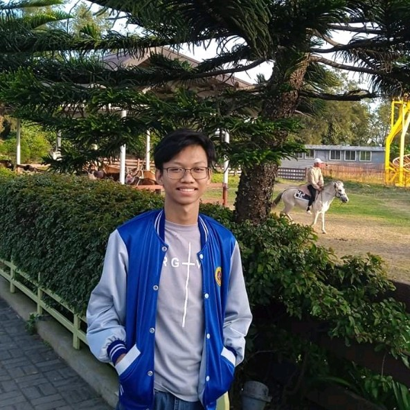

Hi! I am,
Eisen Caluya
Student. Technology Enthusiast. Aspiring Cybersecurity Specialist.
Who am I?
Hello! I am Eisen Caluya, a curious and able individual that continuously expands my field of interests ranging from technology to music.
I am an alumni from Philippine Science High School - Ilocos Region Campus focusing on Cybersecurity and Computer Science / Information Technology.
I have a vast field of expertise, but I am currently working towards improving my knowledge and skills in cybersecurity.
I believe that a secure and interconnected world should be of importance to everyone, especially that technology is quickly improving, as well as the data stored in systems and the processes within.
In addition to cybersecurity and school work, I also enjoy playing multiple instruments (one-man band!), exercising, and cooking.
I am a student leader serving multiple organizations and in my local church as an instrumentalist, and I am currently planning to establish my own youth-led cybersecurity organization.
I am also an advocate for multiple societal issues affecting the modern world, from gender equality to freedom of expression, all in hopes for a better world.
Activities / Projects
> Top 3% Worldwide, TryHackMe, Current - participates in rooms for learning cybersecurity and hacking competitions
> Research Intern, Philippine Space Agency, 2022 - worked in the Space Security Technologies Division and focused on activities connected to Artificial Intelligence for Data Processing
> Secretary General, PSHS-IRC Model United Nations Club, Current - crafting and leading activities and trainings for the delegates; training on the use of ROPs, resolution drafting, and debates; participates in Model UN Youth Summits
> Officer, Royal Knights of Pisay, Current - serves as an Officer for the Philippine Science High School - Ilocos Region Campus Reserve Officer Training Corps (ROTC) Club
> Facilitator and Creatives, Likas Intercampus, 2022 - creates posters for stream episodes and uploads; serves as a shoutcaster for LIkas Intercampus Valorant Tournaments
> Assistant Programs Committee Head, Wanderers PH, 2021 - 2022 - facilitates and co-reviews submissions for future events; co-develops events with the Programs Committee of the organization
> Instrumentalist/Singer/Multimedia, Jesus the Giver of Life Church, Grade 4-Current - serves as an instrumentalist and singer for the Church Worship Team; assists in teaching instruments to aspiring Worship Team members; assists in managing multimedia operations and sound engineering
> Founder / CEO, INSERT ORG NAME, Pending - a youth-led organization focusing on cybersecurity
>
Eisen Caluya 2023